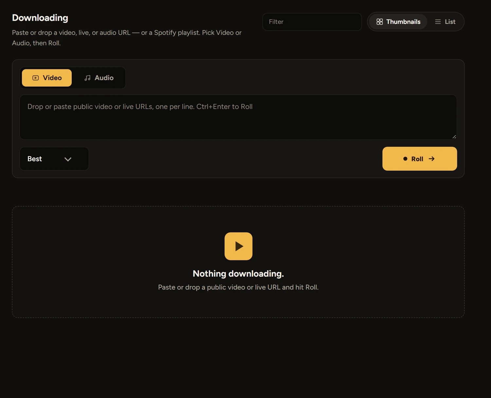
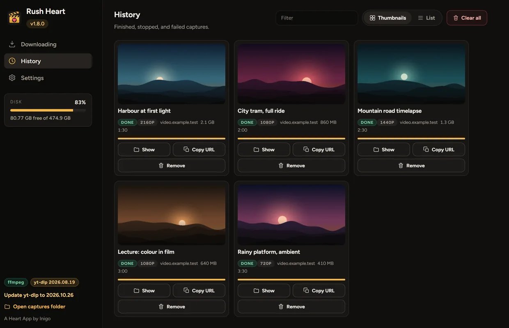
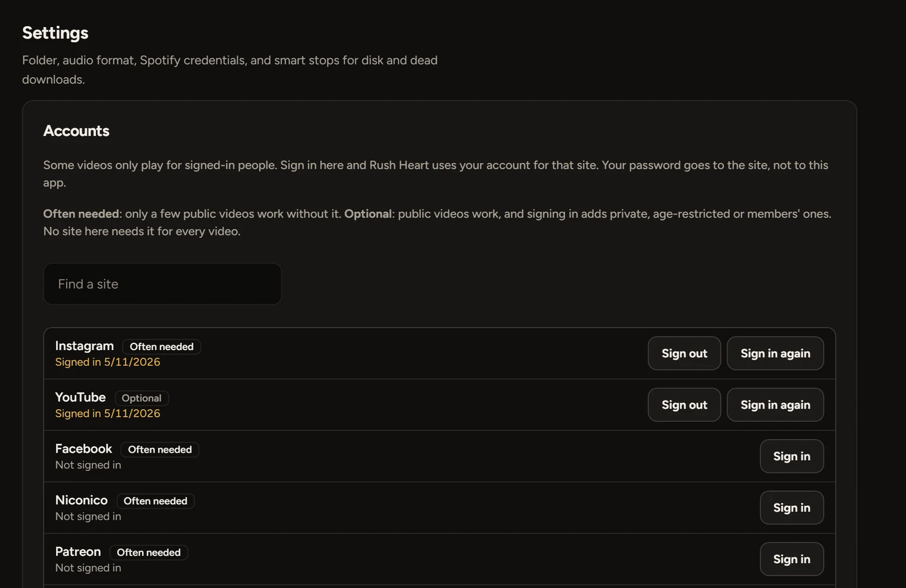

Video or audio
Pick the quality, or take only the sound in the format you prefer, tagged with its title and cover.
- Up to the best the site offers
- MP3, FLAC, M4A, Opus or WAV
- Playlists and subtitles

Rush Heart saves videos and audio to your drive, one link or a list of them, and keeps an eye on the disk while it works.
Download for Windowsor see every release

Paste one link or fifty. Rush Heart works through them and tells you how each one is going.
Pick the quality, or take only the sound in the format you prefer, tagged with its title and cover.

Paste up to 50 links. Rush Heart works through them in a queue, with progress, speed and time left for each.
Some videos only play for signed-in people. Sign in from Settings and Rush Heart uses your account for that site.

Sign in once under Settings, Accounts. The site’s own page opens in a window, so your password goes to the site and not to this app.
Another site takes any address, and a video with its own password takes it from Settings.
Free for Windows 10 and 11. One portable file, with nothing to install. Paste a link and hit Roll.
Windows may warn youThe app isn’t code-signed, so SmartScreen can show “Windows protected your PC”. Choose More info, then Run anyway. Only do that for a file from this page.
The first open is slowerIt unpacks itself, which can take up to half a minute. It keeps its files in a folder beside the exe.
Your videos stay on your computer, and your sign-ins stay there too. There are no ads and nothing to buy, and there won’t be. If a site stops working or something’s broken, write to me. I read everything.
Yes, completely: no ads, no subscriptions and no paid extras.
Videos on the sites yt-dlp supports, plus direct HLS streams. Rush Heart keeps yt-dlp up to date and asks before it installs anything.
You type it into the site’s own page, in a window, and Rush Heart never sees it. It keeps only the session the site gives back, on your computer. Sign out deletes it.
Some sites refuse sign-ins from app windows. Sign in with your own browser and pick it in Settings, or use a cookies.txt file.
It only sees what your own account can see. It won’t get past paywalls, tokens or DRM, and streaming services like Netflix and Prime are blocked. It doesn’t record live cam rooms.
That depends on the video and where you live. Only save what you have the right to save, and don’t record people without their permission. Rush Heart asks you to agree to this, and to confirm you’re 18 or over, when it first opens.
No. FFmpeg and yt-dlp are inside the one file.
Into a captures folder beside the app, or any folder you choose in Settings.